肿瘤预后模型¶

下面这篇文章，估计做生信挖掘的大家不陌生，m6A RNA甲基化文章，影响因子＞5分。网上有很多关于m6A RNA甲基化的文章教程很多，视频也有。我这里提供我自己写的TCGA数据库挖掘部分的R代码。生信嘛，套路都差不多，你换一个方向也可以。
上面文献下载地址：
提取码：x7he
我按照上面文章思路，写了TCGA数据分析部分的代码，当然模拟的数据不是文章的肿瘤数据，数据是TCGA-STAD转录组和临床的数据，分析的基因是我随便找的基因，所以结果没有那么好，只是一个处理流程而已，根据自己研究方向订呗。
代码包括了：
➢ 数据下载
➢ 数据整理
➢ ****(比如m6A)相关基因表达
➢ ****(比如m6A)差异分析（参考文章）
➢ 临床数据下载和整理（参考文章）
➢ 肿瘤分型subtype
主成分分析生存分析临床相关性
➢ 单因素COX分析
➢ Lasso模型构建
➢ 风险生存分析（R语言批量绘制生存曲线）
➢ ROC曲线
➢ 风险热图（热图绘制:基因表达谱热图绘制）
➢ 独立预后分析
下面是我模拟数据自动分析结果
差异基因表达谱热图
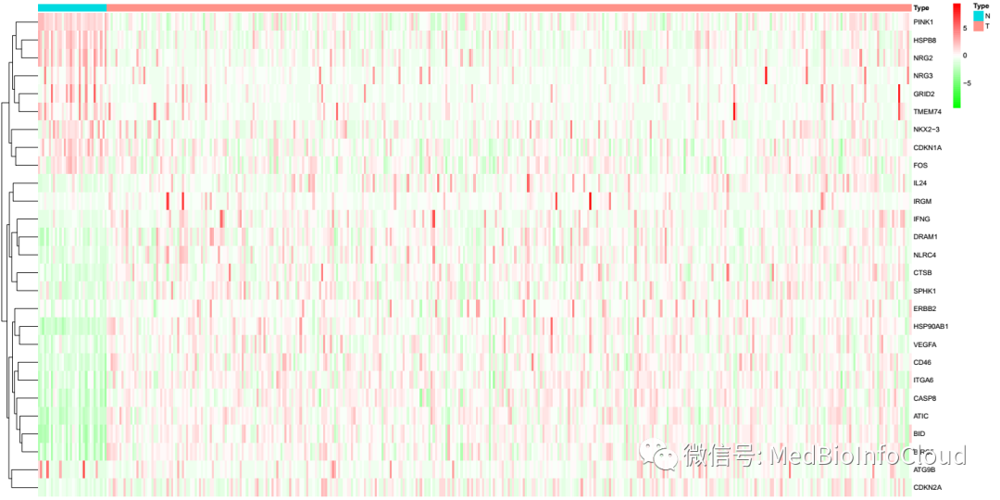
肿瘤分型
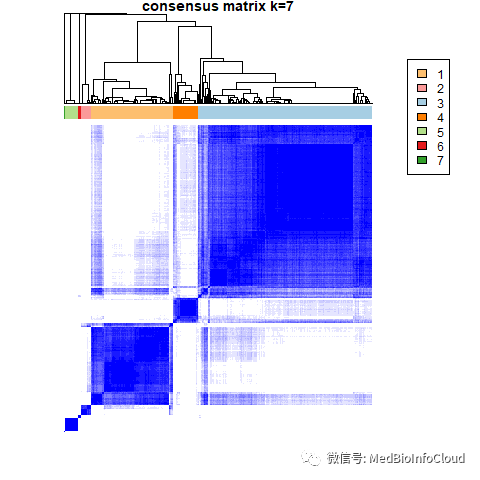
相关性分析
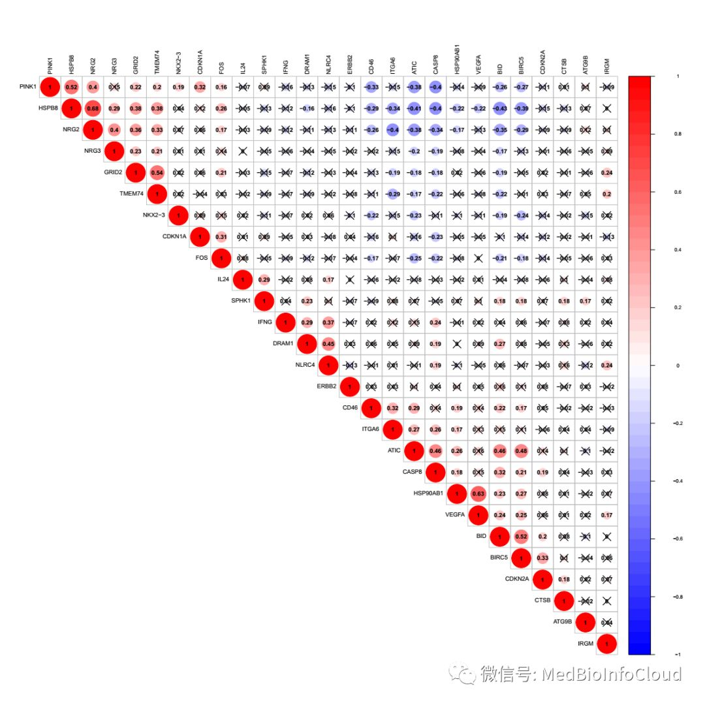
主成分分析
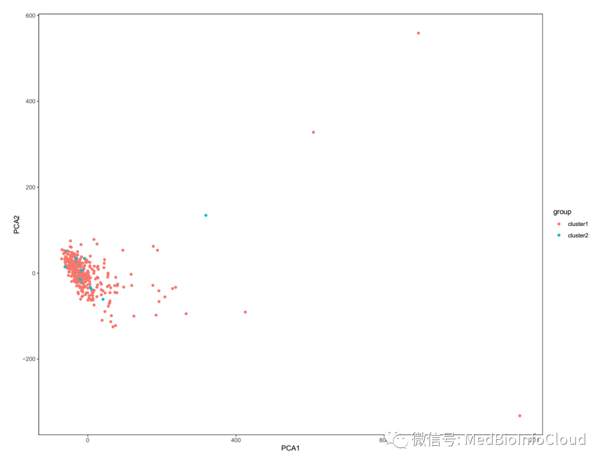
肿瘤分型生存分析
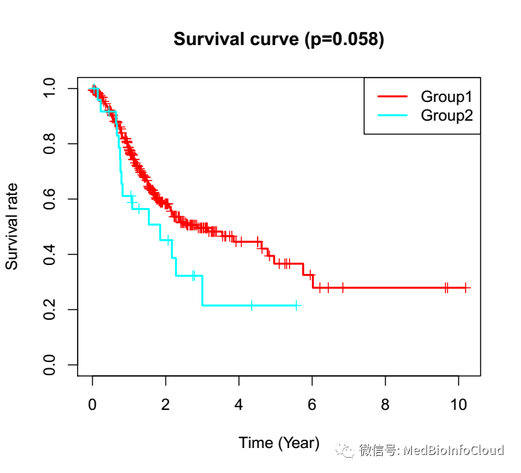
分型与临床相关性热图
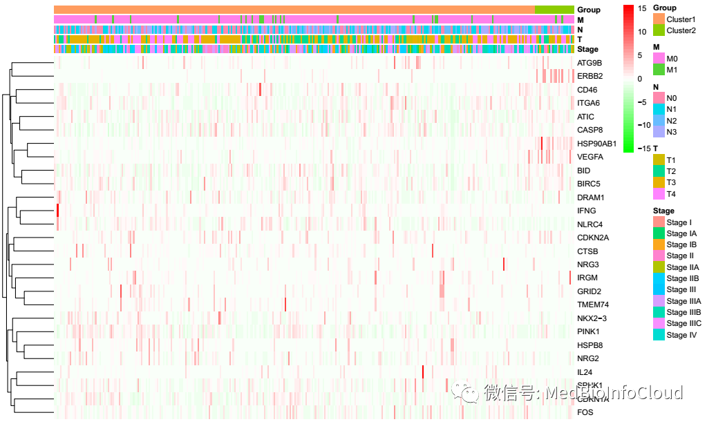
单因素COX分析
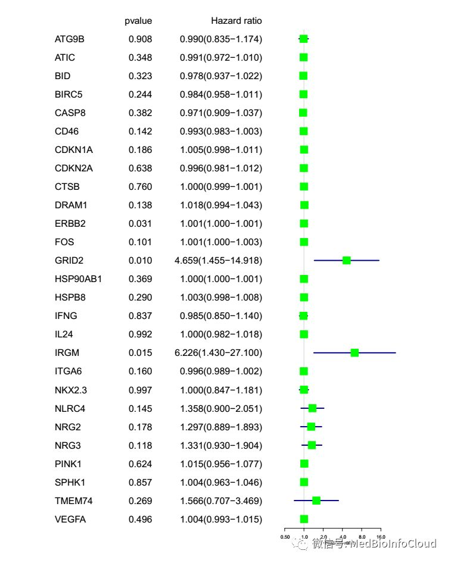
lasso回归
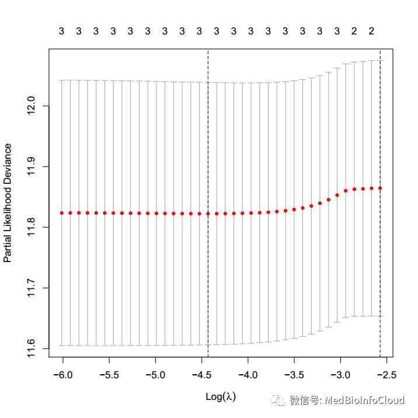
风险生存曲线
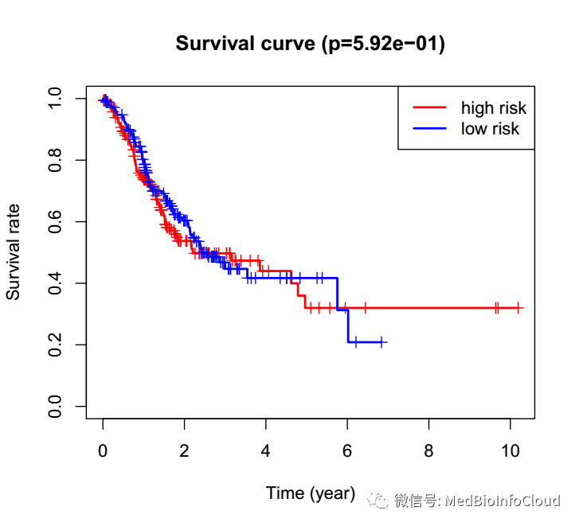
ROC曲线
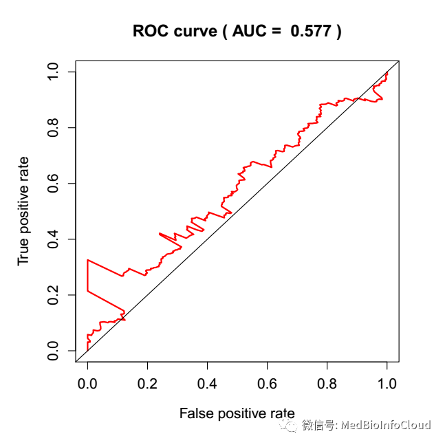
风险与临床相关性热图
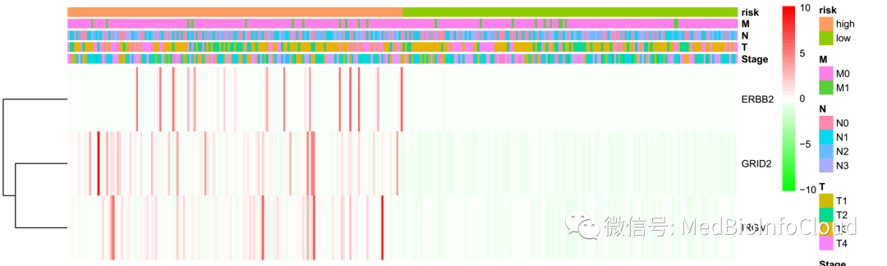
独立预后分析
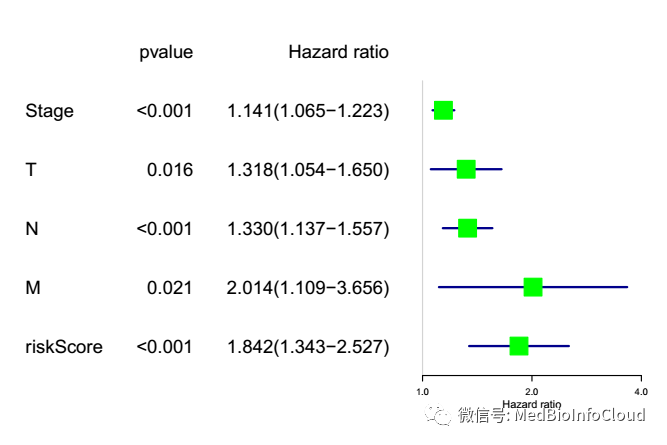
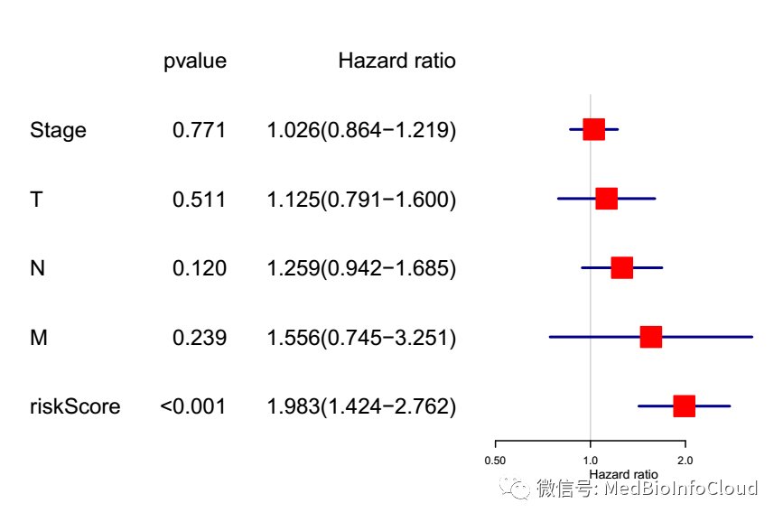
下面是我跑的时候录下的视频，17分钟就跑完了整个流程
付费提示：
下面只提供R代码，有疑虑，就此打住，我用的都是入门级别的函数，懂点R语法，就能看懂，大部分有注释，如果您付费，请尽量选择安卓手机付费，苹果付费要被老美收30%的税费，钱我也收不到。
初次学习，请使用TCGA-STAD转录组和临床的数据进行学习，我也不提供百度网盘下载了，百度网盘下载的速度，非会员太慢，自己去TCGA下载吧，至于基因注释的gtf文件，文章：一文就会TCGA数据库基因表达差异分析：有地址，临床数据下载整理我们也发过文章：一文解决TCGA数据库临床数据下载与整理，下面代码直接读取TCGA的临床数据的tsv格式文件。至于gene文件，你可以选择300左右的基因进行学习。也可以用下面我模拟的基因学习。
提取码：**2opw **
代码出错的可能原因：
1.输入数据文件路径不对；
2.分析的基因太少，最后得到的重要基因为0，所以后面的分析会出错。
3.你下载的数据没有正常样本。
4.还有就是相关R包，你没有装。5.其他原因我也不知道，你自己解决吧，上面是我所知可能出错的原因。至于代码，那就自己码吧，一套下来就是你自己的知识啦，什么m6A RNA甲基化，你换一套基因也一样做嘛，比如免疫相关基因，某个功能相关的基因，换一换也就这些套路。代码，我觉得我写的不是那种高端代码，用的都是入门级别的函数，懂点R语法，就能看懂。最后再说一句，理论知识不懂，那就自己去补吧，学习得靠自己。
options(stringsAsFactors = F)
## dir.create("00-RawData") 手动创建用存放数据
# 需要输入的文件，注意修改
inputPath <- ".\\02-inputFiles" #gene文件和gtf文件路径
FPKMDataPath <- ".\\01-RawData\\FPKM\\" # TCGA 下载的转录组数据
jsonFilePath <- ".\\01-RawData\\FPKM-2020-03-09.json"# 转录组数据对应的json文件
gtfFilesPath <- ".\\02-inputFiles\\human.v33lift37.annotation.gtf"#基因注释文件
geneFilesPath <- ".\\02-inputFiles\\Genes.txt" #要分析的基因，比如m6A RNA甲基化相关基因
# 临床数据文件地址：TCGA下载的临床数据
ClinicalDataPath <- ".\\01-RawData\\Clinical2020-03-09\\TSV\\clinical.tsv"
#############################上面代码地址注意修改
setwd(".\\")
dir.create("03-AnalysisResult")
setwd(".\\03-AnalysisResult")
FolderName <- c("101-extractGenesExp","102-GenesDiff",
"103-correlationAnalysis","104-tumorCluster",
"105-PCA","106-ClinicalDataExtract","107-tumorClusterSurvivalAnalysis",
"108-tumorClusterCorrelationAnalysis","109-singleFactorCOXAnlysis",
"110-LassoRegression","111-RiskSurvivalCurve","112-ROC-Curve",
"113-ClinicalCorrelationOfRisk","114-IndependentPrognostic"
)
mkdir <- function(FolderName){
for (name in FolderName) {
dir.create(name,showWarnings = F)
}
}
mkdir(FolderName)
setwd("..\\")
#####################################################100-2
# 分析结果输出路径
outputPath<- c(".\\03-AnalysisResult\\101-extractGenesExp\\",
".\\03-AnalysisResult\\102-GenesDiff\\",
".\\03-AnalysisResult\\103-CorrelationAnalysis\\",
".\\03-AnalysisResult\\104-tumorCluster\\",
".\\03-AnalysisResult\\105-PCA\\",
".\\03-AnalysisResult\\106-ClinicalDataExtract\\",
".\\03-AnalysisResult\\107-tumorClusterSurvivalAnalysis\\",
".\\03-AnalysisResult\\108-tumorClusterCorrelationAnalysis\\",
".\\03-AnalysisResult\\109-singleFactorCOXAnlysis\\",
".\\03-AnalysisResult\\110-LassoRegression\\",
".\\03-AnalysisResult\\111-RiskSurvivalCurve\\",
".\\03-AnalysisResult\\112-ROC-Curve\\",
".\\03-AnalysisResult\\113-ClinicalCorrelationOfRisk\\",
".\\03-AnalysisResult\\114-IndependentPrognostic\\")
#######输出的文件名称
JsonFileInfoFM <- "JsonFileInfo.txt" # 样本文件名与Barcode的对于关系文件
EnsemblTOGeneFM <- "EnsemblTOGene.txt" # Ensembl ID 与Gene ID 的对于关系文件
#####脚本输出的文件
completeExpMatrixFN <- "101-completeExpMatrix.txt" # 所有样本所有基因的表达矩阵文件
onlyTumorExpMatrixFN <- "101-onlyTumorExpMatrix.txt" # 肿瘤样本所有基因的表达矩阵文件
#####102脚本输出文件
inputGeneAllSampleExpMatrixFN <- "102-inputGeneAllSampleExpMatrix.txt" #所有样本输入基因的表达矩阵文件
inputGeneOnlyTumorExpMatrixFN <- "102-inputGeneOnlyTumorExpMatrix.txt" #肿瘤样本输入基因的表达矩阵文件
###差异分析结果文件
inputGeneDiffExpResultFN <- "102-inputGeneDiffExpResult.txt" #输入基因的差异表达分析结果
sigDiffGeneExpResultFN <- "102-sigDiffGeneExpResult.txt"# pValue < 0.05 & logFC > 1 的基因的差异表达分析结果
###差异分析后相关基因的表达矩阵文件
sigDiffGeneExpMatrixFN <- "102-sigDiffGeneExpMatrix.txt" # 显著差异的基因(pValue < 0.05 & logFC > 1)的表达矩阵(所有样本)
sigDiffGeneTumorExpMatrixFN <- "102-sigDiffGeneTumorExpMatrix.txt"# 显著差异的基因(pValue < 0.05 & logFC > 1)的表达矩阵
####差异基因热图
diffgeneHeatMapFN <- "diffgeneHeatMap.pdf" # 差异分析结果热图文件
diffgeneViolinPlotFN <- "diffgeneViolinPlot.pdf"
diffgeneVolcanoPlotFN <- "diffgeneVolcanoPlot.pdf"
####相关性分析
corHeatFigFN <- "corHeatFig.pdf"
# 肿瘤分型结果文件
ClousterFN <- "Clouster.txt"
# PCA结果文件
PCAResultFN <- "PCAResult.txt"
CloustePCAFigFN <- "CloustePCA.pdf"
###############################################
##########################处理Json文件的函数##########################
processingJsonFiles <- function(jsonFile){
library(rjson)
metadata_json_File <- fromJSON(file=jsonFile)
json_File_Info <- data.frame(filesName = c(),TCGA_Barcode = c())
for(i in 1:length(metadata_json_File)){
TCGA_Barcode <- metadata_json_File[[i]][["associated_entities"]][[1]][["entity_submitter_id"]]
file_name <- metadata_json_File[[i]][["file_name"]]
json_File_Info <- rbind(json_File_Info,data.frame(filesName = file_name,TCGA_Barcode = TCGA_Barcode))
}
rownames(json_File_Info) <- json_File_Info[,1]
json_File_Info <-json_File_Info[-1]
return(json_File_Info)
}
############## 一个函数，通过gtf文件获取Ensemble_ID与基因名称的对应关系
get_map = function(input) {
if (is.character(input)) {
if(!file.exists(input)) stop("Bad input file.")
message("Treat input as file")
input = data.table::fread(input, header = FALSE)
} else {
data.table::setDT(input)
}
input = input[input[[3]] == "gene", ] # 只获取基因
pattern_id = ".*gene_id \"([^;]+)\";.*"
pattern_name = ".*gene_name \"([^;]+)\";.*"
gene_id = sub(pattern_id, "\\1", input[[9]])
gene_name = sub(pattern_name, "\\1", input[[9]])
EnsemblTOGene <- data.frame(gene_id = gene_id,
gene_name = gene_name,
stringsAsFactors = FALSE)
return(EnsemblTOGene)
}
############一个函数，给一个Barcode向量，区分正常组织和肿瘤组织
getSampleInfo <- function(Barcode){
TumorBarcode <-c()
NormalBarcode <-c()
for (id in Barcode) {
ids <- str_split(id,'-',simplify = T)[4]
ids <- as.numeric(substr(ids,1,1))
if(ids == 0){
TumorBarcode <- c(TumorBarcode,id)
}else if (ids == 1) {
NormalBarcode <-c(NormalBarcode,id)
}
}
sampleNum <- data.frame(NormalBarcode = length(NormalBarcode),TumorBarcode = length(TumorBarcode))
sampleList <- data.frame(ID = c(NormalBarcode,TumorBarcode),Type = c(rep("Normal",length(NormalBarcode)),
rep("Tumor",length(TumorBarcode))))
return(list(BarcodeSort = c(NormalBarcode,TumorBarcode),
sampleNum = sampleNum ,sampleList = sampleList))
}
############ 上面函数返回一个重新排序的Barcode列表
############获取生存时间，clindataM应为读入的tsv文件
getSurData <- function(clindataM){
submitter_id <- c()
SurvivalTime <- c()
VitalStatus <-c()
for(i in 1:nrow(clindataM)){
if(clindataM[i,"vital_status"] == "Alive"){
submitter_id = c(submitter_id,clindataM[i,"submitter_id"])
SurvivalTime <- c(SurvivalTime,clindataM[i,"days_to_last_follow_up"])
VitalStatus <- c(VitalStatus,0)
}
else if(clindataM[i,"vital_status"]== "Dead"){
submitter_id = c(submitter_id,clindataM[i,"submitter_id"])
SurvivalTime <- c(SurvivalTime,clindataM[i,"days_to_death"])
VitalStatus <- c(VitalStatus,1)
}else {print(paste("第",i,"行数据的生存状态为空值"))}
}
surData <- data.frame(submitter_id = submitter_id,SurvivalTime = SurvivalTime,VitalStatus = VitalStatus)
return(surData)
}
#########################100-5
options(stringsAsFactors = F)
############################将所有文件移动到同一个文件夹01-tempFiles下
if(file.exists("01-tempFiles")== FALSE){dir.create("01-tempFiles")}
txtfilepath <- dir(path = FPKMDataPath,full.names = TRUE)
for(wd in txtfilepath){
files <-dir(path = wd,pattern="gz$") #查看满足条件文件
fromfilepath <- paste(wd,"\\",files,sep ="")
tofilepath <- paste(".\\01-tempFiles\\",files,sep ="")
file.copy(fromfilepath,tofilepath)
}
########################### 解压所有文件并删除原文件###################
setwd(".\\01-tempFiles")
Files <-dir(path = ".\\",pattern="gz$") #查看满足条件文件
library(R.utils)
sapply(Files, gunzip) # 解压函数gunzip需要安装R.utils包
setwd("..\\")
jsonFileInfo <- processingJsonFiles(jsonFile = jsonFilePath)
write.table(jsonFileInfo,file = paste(outputPath[1],JsonFileInfoFM,sep = ""))
EnsemblTOGene <- get_map(gtfFilesPath)
gtf_Ensembl_ID <- substr(EnsemblTOGene[,1],1,15)
EnsemblTOGene <- data.frame(gtf_Ensembl_ID,EnsemblTOGene[,2])
colnames(EnsemblTOGene) <- c("Ensembl_ID","gene_id")
write.table(EnsemblTOGene,file = paste(outputPath[1],EnsemblTOGeneFM,sep = ""))
##########
options(stringsAsFactors = F)
SampleFilesPath <- ".\\01-tempFiles"
###获取表达矩阵，样品信息已通过getSampleInfo函数排序
num = 0
setwd(SampleFilesPath)
if(file.exists("MANIFEST.txt")){file.remove("MANIFEST.txt")}
FileNames<-dir(pattern="txt$") #list.files()函数也行
geneExpMatrix <- data.frame()
for(txtFile in FileNames){
#每一个循环读取一个文件
print(paste("正在读入文件：",txtFile,sep = ""))
OneSampleExp <- read.table(txtFile,header =FALSE)
# 根据BarcodeFilesPath文件中文件名称与barcode对应关系，命名列名
patientsID <- jsonFileInfo[paste(txtFile,".gz",sep = ""),"TCGA_Barcode"]
colnames(OneSampleExp) <- c("Ensembl_ID",patientsID)
if (dim(geneExpMatrix)[1]== 0){
geneExpMatrix <- OneSampleExp
}else {geneExpMatrix<- merge(geneExpMatrix,OneSampleExp,by = "Ensembl_ID")}
num = num +1
}
setwd("..\\") # 读完数据后返回工作目录
print(paste("读取文件完毕,共读入",num,"个文件",sep = ""))
library(stringr)
ids <- c(str_split(geneExpMatrix$Ensembl_ID,'[.]',simplify = T)[,1])
# rownames(geneExpMatrix) <- geneExpMatrix$Ensembl_ID
geneExpMatrix$Ensembl_ID <- ids
geneExpMatrix <- merge(EnsemblTOGene,geneExpMatrix,by = "Ensembl_ID")
Barcode <- colnames(geneExpMatrix)[3:length(colnames(geneExpMatrix))]
print("开始数据整理排序")
BarcodeSort <- getSampleInfo(Barcode)$BarcodeSort
geneExpMatrix <- geneExpMatrix[,c("Ensembl_ID","gene_id",BarcodeSort)]
library(limma)
geneNames<- geneExpMatrix[,"gene_id"]
completeExpMatrix <- geneExpMatrix[,-c(1,2)]
completeExpMatrix <- as.matrix(completeExpMatrix)
rownames(completeExpMatrix) <- as.vector(geneNames)
completeExpMatrix <- avereps(completeExpMatrix)
completeExpMatrix <- as.data.frame(completeExpMatrix)
completeExpMatrix <-t(completeExpMatrix)
# 从数据集中删除零方差列，可以使用相同的apply 表达式，设置方差不等于零。completeExpMatrix <- completeExpMatrix[,which(apply(completeExpMatrix, 2, var)!=0)]
completeExpMatrix <- t(completeExpMatrix)
#保存文件
write.table(completeExpMatrix,file = paste(outputPath[1],completeExpMatrixFN,sep = ""),
sep = "\t",row.names = T)
# 删除正常样本后的表达矩阵
SampleInfo <- getSampleInfo(colnames(completeExpMatrix))
conNum <- SampleInfo[["sampleNum"]][["NormalBarcode"]]#control组样品数目
treatNum <- SampleInfo[["sampleNum"]][["TumorBarcode"]]#tumor组样品数目
SampleList <- SampleInfo[["sampleList"]]
TumorSampleBarcode <- SampleList[which(SampleList$Type == "Tumor"),"ID"]
onlyTumorExpMatrix <- completeExpMatrix[,TumorSampleBarcode]
onlyTumorExpMatrix <-t(onlyTumorExpMatrix)
# 从数据集中删除零方差列，可以使用相同的apply 表达式，设置方差不等于零。onlyTumorExpMatrix <- onlyTumorExpMatrix[,which(apply(onlyTumorExpMatrix, 2, var)!=0)]
onlyTumorExpMatrix <- t(onlyTumorExpMatrix)
write.table(onlyTumorExpMatrix,file = paste(outputPath[1],onlyTumorExpMatrixFN,sep = ""),
sep = "\t",row.names = T)
######################################
options(stringsAsFactors = F)
library(limma)
#####################
#开始读入数据
gene <- read.table(geneFilesPath,header = F)
# 取表达矩阵中的基因与我们要分析的基因的交集
yesgene <-intersect(gene[,1],as.vector(row.names(completeExpMatrix)))
# 表达矩阵中没有的基因
nogene <- setdiff(gene[,1],yesgene)
writeLines(c(paste("总共输入了",length(gene[,1]),"基因：",sep=""),
paste("在表达矩阵中有的基因个数：",length(yesgene),sep=""),
yesgene,paste("在表达矩阵中没有的基因个数：",length(nogene),sep=""),nogene),
con=paste(outputPath[2],"filespec.txt",sep = ""),sep="\n")
inputGeneAllSampleExpMatrix <- as.matrix(completeExpMatrix[yesgene,])
write.table(inputGeneAllSampleExpMatrix,
file=paste(outputPath[2],inputGeneAllSampleExpMatrixFN,sep = ""),
sep="\t",row.names=T,quote=F)
inputGeneOnlyTumorExpMatrix <- inputGeneAllSampleExpMatrix[,TumorSampleBarcode]
write.table(inputGeneOnlyTumorExpMatrix,
file=paste(outputPath[2],inputGeneOnlyTumorExpMatrixFN,sep = ""),
sep="\t",row.names=T,quote=F)
#差异分析
library("limma")
grade <- c(rep(1,conNum),rep(2,treatNum))
inputGeneDiffExpResult <- data.frame()
for(i in row.names(inputGeneAllSampleExpMatrix)){
rt <- rbind(expression=inputGeneAllSampleExpMatrix[i,],grade=grade)
rt <- as.matrix(t(rt))
wilcoxTest <- wilcox.test(expression ~ grade, data=rt)
conGeneMeans <- mean(inputGeneAllSampleExpMatrix[i,1:conNum])
treatGeneMeans <- mean(inputGeneAllSampleExpMatrix[i,(conNum+1):ncol(inputGeneAllSampleExpMatrix)])
logFC <- log2(treatGeneMeans)-log2(conGeneMeans)
pvalue <- wilcoxTest$p.value
conMed <- median(inputGeneAllSampleExpMatrix[i,1:conNum])
treatMed <- median(inputGeneAllSampleExpMatrix[i,(conNum+1):ncol(inputGeneAllSampleExpMatrix)])
diffMed <- treatMed-conMed
exp <- data.frame(gene=i,conMean=conGeneMeans,treatMean=treatGeneMeans,logFC=logFC,pValue=pvalue)
if (length(inputGeneDiffExpResult) == 0){
inputGeneDiffExpResult <- exp
}else {inputGeneDiffExpResult <- rbind(inputGeneDiffExpResult,exp)}
}
#输出所有基因的差异表达情况
write.table(inputGeneDiffExpResult,
file=paste(outputPath[2],inputGeneDiffExpResultFN,sep = ""),
sep="\t",row.names=F,quote=F)
# 获取具有显著差异表达的结果
sigDiffGeneExpResult <- inputGeneDiffExpResult[which(inputGeneDiffExpResult$pValue < 0.05 & abs(inputGeneDiffExpResult$logFC)>1),]
sigDiffGeneExpResult[which(sigDiffGeneExpResult$logFC > 0), "up_down"] <- "Up"
sigDiffGeneExpResult[which(sigDiffGeneExpResult$logFC < 0), "up_down"] <- "Down"
write.table(sigDiffGeneExpResult,
file=paste(outputPath[2],sigDiffGeneExpResultFN,sep = ""),
sep="\t",row.names=F,quote=F)
###差异分析后相关基因的表达矩阵文件
sigDiffGeneExpMatrix <- completeExpMatrix[sigDiffGeneExpResult$gene,]
write.table(sigDiffGeneExpMatrix,
file=paste(outputPath[2],sigDiffGeneExpMatrixFN,sep = ""),
sep="\t",row.names=F,quote=F)
sigDiffGeneTumorExpMatrix <- completeExpMatrix[sigDiffGeneExpResult$gene,TumorSampleBarcode]
write.table(sigDiffGeneTumorExpMatrix,
file=paste(outputPath[2],sigDiffGeneTumorExpMatrixFN,sep = ""),
sep="\t",row.names=F,quote=F)
###############
#####热图的绘制
#install.packages("pheatmap")
diffGeneExpHeatMapData=log2(sigDiffGeneExpMatrix+1)
library(pheatmap)
Type=c(rep("N",conNum),rep("T",treatNum))
names(Type)=colnames(diffGeneExpHeatMapData)
Type=as.data.frame(Type)
pdf(paste(outputPath[2],diffgeneHeatMapFN,sep = ""),height=10,width=20)
pheatmap(diffGeneExpHeatMapData,
annotation=Type,
color = colorRampPalette(c("green", "white", "red"))(50),
cluster_cols =F,
show_colnames = F,
scale="row",
fontsize = 10,
fontsize_row=10,
fontsize_col=3)
dev.off()
#################################103
#install.packages("corrplot")
library(corrplot)
cordata <- t(sigDiffGeneExpMatrix)
res1 <- cor.mtest(cordata, conf.level = 0.95)
pdf(paste(outputPath[5],corHeatFigFN,sep = ""),height=20,width=20)#保存图片的文件名称
corrplot(corr=cor(cordata),
method = "circle",
order = "hclust",
tl.col="black",
addCoef.col = "black",
p.mat = res1$p,
sig.level = 0.001,
insig = "pch",
number.cex = 1,
type = "upper",
col=colorRampPalette(c("blue", "white", "red"))(50),
)
dev.off()
########################104
#######################肿瘤分型######################
library(limma)
#聚类
maxK=9
library(ConsensusClusterPlus)
results <- ConsensusClusterPlus(sigDiffGeneTumorExpMatrix,
maxK=maxK,
reps=50,
pItem=0.8,
pFeature=1,
title=outputPath[4],
clusterAlg="km",
distance="euclidean",
seed=123456,
plot="png")
#输出结果
clusterNum <- 2 #分几类，根据判断标准判断
cluster <- results[[clusterNum]][["consensusClass"]]
write.table(cluster,file=paste(outputPath[4],ClousterFN,sep = ""),
sep="\t",quote=F,col.names=F)
###################################105
##############主成分分析#############
#install.packages("ggplot2")
#pca analysis
library(limma)
### PCA分析
pcaData <- t(as.matrix(onlyTumorExpMatrix))
pcaData.class <- rownames(pcaData)
pcaData.pca <- prcomp(pcaData, scale. = TRUE) #PCA分析
write.table(predict(pcaData.pca),file=paste(outputPath[5],PCAResultFN,sep = "")
,quote=F,sep="\t") #输出新表
#可视化
library(ggplot2)
clusterInfo <- as.data.frame(cluster)
group <- paste0("cluster",as.vector(clusterInfo[,1]))
pcaPredict <- predict(pcaData.pca)
PCA <- data.frame(PCA1 = pcaPredict[,1], PCA2 = pcaPredict[,2],group=group)
pdf(file=paste(outputPath[5],CloustePCAFigFN,sep = ""),height=10,width=13)#保存输入出文件
ggplot(data = PCA, aes(PCA1, PCA2)) + geom_point(aes(color = group)) +
theme_bw()+
theme(plot.margin=unit(rep(1.5,4),'lines'))+
theme(panel.grid.major = element_blank(), panel.grid.minor = element_blank())
dev.off()
###################################106
options(stringsAsFactors = F)
ClinicalData <- read.table(ClinicalDataPath,sep = "\t",header = T)
ClinicalData <- ClinicalData[!duplicated(ClinicalData$submitter_id),]
pClinData <- ClinicalData[,c("submitter_id",
"gender",
"days_to_death",
"days_to_last_follow_up",
"vital_status",
"ajcc_pathologic_stage",
"ajcc_pathologic_t",
"ajcc_pathologic_n",
"ajcc_pathologic_m")]
surData <- getSurData(ClinicalData)
clindata <- merge(surData,pClinData,by = "submitter_id")
clindata$ajcc_pathologic_stage <- gsub("[A-D].*","",c(pClinData$ajcc_pathologic_stage))
clindata$ajcc_pathologic_t <- gsub("[a-c].*","",c(clindata$ajcc_pathologic_t))
clindata$ajcc_pathologic_n <- gsub("[a-c].*","",c(clindata$ajcc_pathologic_n))
clindata$ajcc_pathologic_m <- gsub("[a-c].*","",c(clindata$ajcc_pathologic_m))
clindata <- clindata[,c("submitter_id","SurvivalTime","VitalStatus",
"ajcc_pathologic_stage",
"ajcc_pathologic_t",
"ajcc_pathologic_n",
"ajcc_pathologic_m")]
colnames(clindata) <- c("Barcode","SurvivalTime","VitalStatus","Stage","T","N","M")
write.table(clindata,file=paste(outputPath[6],"clindata.txt",sep = ""),sep="\t",row.names=F,quote=F)
#########
ultiClinDataFN <- "ultiClinData.csv"
ClinBarcode <- clindata$Barcode
patientsID <-c()
for(id in ClinBarcode){
index = grep(id,TumorSampleBarcode)
patientsID <- c(patientsID,TumorSampleBarcode[index[1]])
}
ultiClindata <- data.frame(Barcodes=patientsID,clindata)
ultiClindata <- ultiClindata[which(!is.na(ultiClindata$Barcodes)),]
write.csv(ultiClindata,
file=paste(outputPath[6],ultiClinDataFN,sep = ""),
row.names=F,quote=F)
##########
options(stringsAsFactors = F)
clusterNum = clusterNum #聚类分为几类，可以更改
SurD <- ultiClindata# read.csv(paste(outputPath[6],ultiClinDataFN,sep = ""),header = T)
SurD <- SurD[which(SurD$SurvivalTime != "--"),]
rownames(SurD) <- SurD$Barcodes
SurD <- SurD[,c("SurvivalTime","VitalStatus")]
Surdata <- data.matrix(SurD) ##因为数值是字符串类型
Surdata <- as.data.frame(Surdata)
Surdata$SurvivalTime <- Surdata$SurvivalTime/365
#
classification <- as.data.frame(cluster)
classification <- classification[rownames(Surdata),]
classification <- paste0("cluster",as.vector(classification))
Surdata$group <- classification
#install.packages("survival")
library(survival)
diff <- survdiff(Surv(SurvivalTime, VitalStatus) ~ group,data = Surdata)
pValue <- 1-pchisq(diff$chisq,df=clusterNum-1)# df为自由度n-1
if(pValue<0.001){
pValue <- signif(pValue,4)
pValue <- format(pValue, scientific = TRUE)
}else{
pValue <- round(pValue,3)
}
fit <- survfit(Surv(SurvivalTime, VitalStatus) ~ group, data = Surdata)
summary(fit)# 查看5年生存率
pdf(file=paste(outputPath[7],"ClousterSurCurve.pdf",sep = ""),width = 5.5,height =5)
plot(fit,
lwd=2,
col=rainbow(clusterNum),
xlab="Time (Year)",
mark.time=T,
ylab="Survival rate",
main=paste("Survival curve (p=", pValue ,")",sep=""))
legend("topright",
paste0("Group",1:clusterNum),
lwd=2,
col=rainbow(clusterNum))
dev.off()
##############################108
options(stringsAsFactors = F)
SurD <- ultiClindata# read.csv(paste(outputPath[6],ultiClinDataFN,sep = ""),header = T)
SurD <- SurD[which(SurD$Stage != "--"),]
SurD <- SurD[which(SurD$T != "--"),]
SurD <- SurD[which(SurD$N != "--"),]
SurD <- SurD[which(SurD$N != "NX"),]
SurD <- SurD[which(SurD$M != "--"),]
if(length(grep("MX",SurD$M)) < nrow(SurD)/10){
SurD <- SurD[which(SurD$M != "MX"),]
}
rownames(SurD) <- SurD$Barcodes
classification <- as.data.frame(cluster)
classification <- classification[SurD$Barcodes,]
classification <- paste0("Cluster",as.vector(classification))
SurD$Group <- classification
### 临床相关性检验：分型与临床症状的相关性检验
trainFlag <- SurD[SurD[,"Group"]=="Cluster1",]
testFlag <- SurD[SurD[,"Group"]== "Cluster2",]
newTable <- rbind(trainFlag,testFlag)
newLabels <- c("Barcodes","Barcode","SurvivalTime","VitalStatus")
for(i in 5:(ncol(newTable)-1)){
nameStat <- colnames(newTable)[i]
tableStat <- table(newTable[,c(nameStat,"Group")])
pStat <- chisq.test(tableStat) # 注意检验方法
pvalue <- pStat$p.value
if(pvalue<0.001){
newLabels <- c(newLabels,paste0(colnames(newTable)[i],"***"))
}else if(pvalue<0.01){
newLabels <- c(newLabels,paste0(colnames(newTable)[i],"**"))
}else if(pvalue<0.05){
newLabels <- c(newLabels,paste0(colnames(newTable)[i],"*"))
}else{
newLabels <- c(newLabels,colnames(newTable)[i])
}
print(paste(colnames(newTable)[i],pvalue,sep=" "))
}
colnames(newTable) <- c(newLabels,"Group")
######################################################
#install.packages("pheatmap")
library(pheatmap)
newTable <- newTable[order(newTable$Group),]
row.names(newTable) <- newTable[,"Barcodes"]
rt <- newTable[,-c(1:4)]
ExpMatrix <- sigDiffGeneTumorExpMatrix[,rownames(rt)] #sigDiffGeneTumorExpMatrix来自102
pdf(paste(outputPath[8],"ClousterWithClinCor.pdf",sep = ""),height=6,width=10)
pheatmap(ExpMatrix, annotation = rt,
color = colorRampPalette(c("green", "white", "red"))(50),
cluster_cols =F,
fontsize=8,
fontsize_row=8,
scale="row",
show_colnames=F,
fontsize_col=3)
dev.off()
##########
options(stringsAsFactors = F)
##############################################################
### 读入数据并整理
SurD <- ultiClindata# read.csv(paste(outputPath[6],ultiClinDataFN,sep = ""),header = T)
SurD <- SurD[which(SurD$SurvivalTime != "--"),]
rownames(SurD) <- SurD$Barcodes
SurD <- SurD[,c("SurvivalTime","VitalStatus")]
coxSurdata <- data.matrix(SurD) ##因为数值是字符串类型
coxSurdata <- as.data.frame(coxSurdata)
coxSurdata$SurvivalTime <- coxSurdata$SurvivalTime/365
coxSurdata <- data.frame(Barcodes=rownames(coxSurdata),coxSurdata)
coxExp <- sigDiffGeneTumorExpMatrix[,rownames(coxSurdata)]
#sigDiffGeneTumorExpMatrix来自102
coxExp <-t(coxExp)
coxData <- data.frame(Barcodes = rownames(coxExp),coxExp)
coxData <- merge(coxSurdata,coxData,by = "Barcodes")
####开始单因素COX分析
#install.packages('survival')
#install.packages('forestplot')
library(survival)
library(forestplot)
options(forestplot_new_page = FALSE) # 在pdf文件中生成图形就在第一页，不声明会在第二页
clrs <- fpColors(box="green",line="darkblue", summary="royalblue") #定义森林图颜色
rt <- coxData[,-1]
coxResult <- data.frame()
for(i in colnames(rt[,3:ncol(rt)])){
cox <- coxph(Surv(SurvivalTime,VitalStatus) ~ rt[,i], data = rt)
coxSummary <- summary(cox)
coxP <- coxSummary$coefficients[,"Pr(>|z|)"]
coxResult <- rbind(coxResult,
cbind(Gene=i,
HR=coxSummary$conf.int[,"exp(coef)"],
HR.95L=coxSummary$conf.int[,"lower .95"],
HR.95H=coxSummary$conf.int[,"upper .95"],
pvalue=coxSummary$coefficients[,"Pr(>|z|)"])
)
}
write.table(coxResult,file =paste(outputPath[9],"coxResult.txt",sep = ""),sep = "\t")
write.table(coxResult,file=paste(outputPath[9],"coxResult.xls",sep = ""),sep="\t",row.names=F,quote=F)
#绘制森林图
rt<-read.table(paste(outputPath[9],"coxResult.xls",sep = ""),
header=T,sep="\t",row.names=1,check.names=F)
data <- as.matrix(rt)
HR <- data[,1:3]
hr <- sprintf("%.3f",HR[,"HR"])
hrLow <- sprintf("%.3f",HR[,"HR.95L"])
hrHigh <- sprintf("%.3f",HR[,"HR.95H"])
pVal <- data[,"pvalue"]
pVal <- ifelse(pVal<0.001, "<0.001", sprintf("%.3f", pVal))
tabletext <-
list(c(NA, rownames(HR)),
append("pvalue", pVal),
append("Hazard ratio",paste0(hr,"(",hrLow,"-",hrHigh,")")) )
pdf(file=paste(outputPath[9],"forest.pdf",sep = ""),
width = 8,
height = 10,
)
forestplot(tabletext,
rbind(rep(NA, 3), HR),
col=clrs,
graphwidth=unit(50, "mm"),
xlog=T,
lwd.ci=2,
boxsize=0.4,
xlab="Hazard ratio"
)
dev.off()
options(stringsAsFactors = F)
##############################################################
#install.packages("glmnet")
library("glmnet") #
library("survival")
inputGene <-coxResult[which(coxResult$pvalue < 0.05),]$Gene
lassoData <- coxData[,c("Barcodes","SurvivalTime","VitalStatus",inputGene)]
row.names(lassoData) <-lassoData$Barcodes
rt <- lassoData[,-1]
# x <- as.matrix(rt[,-c(1,2)]) # 这样转换后不能用于后面的分析，不是数字矩阵
x <- data.matrix(rt[,c(3:ncol(rt))])#
y <- data.matrix(Surv(rt$SurvivalTime,rt$VitalStatus))
#################################################
fit <- glmnet(x, y,family = "cox" ,maxit = 5000)# 原来是family = "cox"
pdf(paste(outputPath[10],"lambda.pdf",sep = ""))
plot(fit, xvar = "lambda", label = TRUE)
dev.off()
cvfit <- cv.glmnet(x, y, family = "cox", maxit = 10000)
pdf(paste0(outputPath[10],"cvfit.pdf"))
plot(cvfit)
abline(v=log(c(cvfit$lambda.min,cvfit$lambda.1se)),lty="dashed")
dev.off()
coef <- coef(fit, s = cvfit$lambda.min)
index <- which(coef != 0)
actCoef <- coef[index]
lassoGene <- row.names(coef)[index]# lassoGene=row.names(coef)[index]
geneCoef <- cbind(Gene=lassoGene,Coef=actCoef)
write.table(geneCoef,file=paste0(outputPath[10],"geneCoef.txt"),sep="\t",quote=F,row.names=F)
riskScore <- predict(cvfit, newx = x, s = "lambda.min",type="response")
outCol <- c("SurvivalTime","VitalStatus",lassoGene)
risk <- as.vector(ifelse(riskScore>median(riskScore),"high","low"))
outTab <- cbind(rt[,outCol],riskScore=as.vector(riskScore),risk)
write.table(cbind(Barcodes = rownames(outTab),outTab),
file=paste0(outputPath[10],"lassoRisk.txt"),
sep="\t",
quote=F,
row.names=F)
##############################################################
#install.packages("survival")
library(survival)
rt <- read.table(paste0(outputPath[10],"lassoRisk.txt"),header=T,sep="\t")
diff <- survdiff(Surv(SurvivalTime, VitalStatus) ~risk,data = rt)
pValue <- 1-pchisq(diff$chisq,df=1)
pValue <- round(pValue,3)
pValue <- signif(pValue,4)
pValue <- format(pValue, scientific = TRUE)
fit <- survfit(Surv(SurvivalTime, VitalStatus) ~ risk, data = rt)
summary(fit) #查看五年生存率
pdf(file=paste0(outputPath[11],"RiskSurvival.pdf"),width=5.5,height=5)
plot(fit,
lwd=2,
col=c("red","blue"),
xlab="Time (year)",
ylab="Survival rate",
main=paste("Survival curve (p=", pValue ,")",sep=""),
mark.time=T)
legend("topright",
c("high risk", "low risk"),
lwd=2,
col=c("red","blue"))
dev.off()
options(stringsAsFactors = F)
##############################################################
#install.packages("survival")
library(survivalROC)
rt <- read.table(paste0(outputPath[10],"lassoRisk.txt"),header=T,sep="\t",
check.names=F,row.names=1) #读取lasso回归风险文件
pdf(file=paste0(outputPath[12],"ROC.pdf"),width=6,height=6)
par(oma=c(0.5,1,0,1),font.lab=1.5,font.axis=1.5)
roc <- survivalROC(Stime=rt$SurvivalTime, status=rt$VitalStatus, marker = rt$riskScore,
predict.time =5, method="KM")
plot(roc$FP, roc$TP, type="l", xlim=c(0,1), ylim=c(0,1),col='red',
xlab="False positive rate", ylab="True positive rate",
main=paste("ROC curve (", "AUC = ",round(roc$AUC,3),")"),
lwd = 2, cex.main=1.3, cex.lab=1.2, cex.axis=1.2, font=1.2)
abline(0,1)
dev.off()
##############
options(stringsAsFactors = F)
##############################################################
#######数据整理
##需要一风险基因的表达矩阵，和一个临床数据
lassoRisk <- read.table(paste0(outputPath[10],"lassoRisk.txt"),header=T,sep="\t",
check.names=F) #读取lasso回归风险文件
lassoRiskGroup <- lassoRisk[,c("Barcodes","risk")]
#临床表型数据文件
SurD <- ultiClindata# read.csv(paste(outputPath[6],ultiClinDataFN,sep = ""),header = T)
SurD <- SurD[which(SurD$Stage != "--"),]
SurD <- SurD[which(SurD$T != "--"),]
SurD <- SurD[which(SurD$N != "--"),]
SurD <- SurD[which(SurD$N != "NX"),]
SurD <- SurD[which(SurD$M != "--"),]
if(length(grep("MX",SurD$M)) < nrow(SurD)/10){
SurD <- SurD[which(SurD$M != "MX"),]
}
RiskCorClinData <- merge(SurD[,-c(2:4)],lassoRisk,by = "Barcodes")
RriskGenesExp <- RiskCorClinData[,-c(2:7)]
rownames(RriskGenesExp) <- RriskGenesExp$Barcodes
RriskGenesExp <- RriskGenesExp[,-c(1,(ncol(RriskGenesExp)-1):ncol(RriskGenesExp))]
######显著性检验
rt <- RiskCorClinData[,c("Barcodes","Stage","T","N","M","risk")]
trainFlag <- rt[rt[,"risk"]=="low",]
trainFlag <- cbind(trainFlag,Group="Group1")
testFlag <- rt[rt[,"risk"]=="high",]
testFlag <- cbind(testFlag,Group="Group2")
newTable <- rbind(trainFlag,testFlag)
newLabels = c("Barcodes")
variate <- c("Stage","T","N","M")
for(i in variate){
tableStat=table(newTable[,c(i,"Group")])
pStat=chisq.test(tableStat)# 注意检验方法
pvalue=pStat$p.value
if(pvalue<0.001){
newLabels=c(newLabels,paste0(i,"***"))
}else if(pvalue<0.01){
newLabels=c(newLabels,paste0(i,"**"))
}else if(pvalue<0.05){
newLabels=c(newLabels,paste0(i,"*"))
}else{
newLabels=c(newLabels,i)
}
print(paste(i,pvalue,sep=" "))
}
newLabels <- c(newLabels,"risk")
colnames(rt)=newLabels
write.table(rt,file=paste0(outputPath[13],"RiskWtihClinSignificanceTest.txt"),
sep="\t",row.names=F,quote=F)
##############################绘制热图######
Exp <- t(RriskGenesExp)
Type <-rt[order(rt$risk),]
row.names(Type) <- Type$Barcodes
Type <- Type[,-1]
Exp <- Exp[,rownames(Type)]
outpdf <- paste0(outputPath[13],"heatmap.pdf")
library(pheatmap)
pdf(outpdf,height=3,width=10)
pheatmap(Exp, annotation=Type,
color = colorRampPalette(c("green", "white", "red"))(50),
cluster_cols =F,
fontsize=7.5,
fontsize_row=8,
scale="row",
show_colnames=F,
fontsize_col=3)
dev.off()
options(stringsAsFactors = F)
##############################################################
#读取lasso回归风险文件,lassoRisk.txt文件中 生存时间已经除了365
lassoRisk <- read.table(paste0(outputPath[10],"lassoRisk.txt"),header=T,sep="\t",
check.names=F) #读取lasso回归风险文件
clinicalLassoRisk <- lassoRisk[,c("Barcodes","riskScore")]
#读取临床表型数据文件
SurD <- ultiClindata# read.csv(paste(outputPath[6],ultiClinDataFN,sep = ""),header = T)
SurD <- SurD[which(SurD$SurvivalTime != "--"),]
rownames(SurD) <- SurD$Barcodes
SurD <- SurD[,c("SurvivalTime","VitalStatus")]
Surdata <- data.matrix(SurD) ##因为数值是字符串类型
Surdata <- as.data.frame(Surdata)
Surdata$SurvivalTime <- Surdata$SurvivalTime/365
Surdata <- data.frame(Barcodes = rownames(Surdata),Surdata)
TNMdata <- ultiClindata[,c("Barcodes","Stage","T","N","M")]
clinIndeP <- merge(Surdata,TNMdata,by = "Barcodes")
IndeProgData <- merge(clinIndeP,clinicalLassoRisk,by = "Barcodes")
IndeProgData <- IndeProgData[which(IndeProgData$Stage != "--"),]
IndeProgData <- IndeProgData[which(IndeProgData$T != "--"),]
IndeProgData <- IndeProgData[which(IndeProgData$N != "--"),]
IndeProgData <- IndeProgData[which(IndeProgData$N != "NX"),]
IndeProgData <- IndeProgData[which(IndeProgData$M != "--"),]
if(length(grep("MX",IndeProgData$M)) < nrow(IndeProgData)/10){
IndeProgData <- IndeProgData[which(IndeProgData$M != "MX"),]
}
IndeProgData$Stage <- as.integer(factor(IndeProgData$Stage))
IndeProgData$T <- as.integer(factor(IndeProgData$T))
IndeProgData$N <- as.integer(factor(IndeProgData$N))
IndeProgData$M <- as.integer(factor(IndeProgData$M))
#####写出数据用
write.csv(IndeProgData,
file = paste0(outputPath[14],"IndependentPrognosticData.csv"),row.names = F)
####################
options(stringsAsFactors = F)
#install.packages('survival')
#install.packages('forestplot')
library(survival)
library(forestplot)
options(forestplot_new_page = FALSE)
clrs <- fpColors(box="green",line="darkblue", summary="royalblue") #定义森林图颜色
rt <- IndeProgData#read.table(file = paste(outputPath[14],"IndependentPrognosticData.csv",sep = ""),header=T,check.names=F)
rownames(rt) <- rt$Barcodes
rt <- rt[,-1]
outTab=data.frame()
for(i in colnames(rt[,3:ncol(rt)])){
cox <- coxph(Surv(SurvivalTime, VitalStatus) ~ rt[,i], data = rt)
coxSummary = summary(cox)
coxP=coxSummary$coefficients[,"Pr(>|z|)"]
outTab=rbind(outTab,
cbind(id=i,
HR=coxSummary$conf.int[,"exp(coef)"],
HR.95L=coxSummary$conf.int[,"lower .95"],
HR.95H=coxSummary$conf.int[,"upper .95"],
pvalue=coxSummary$coefficients[,"Pr(>|z|)"])
)
}
write.table(outTab,file=paste0(outputPath[14],"uniCox.xls"),
sep="\t",row.names=F,quote=F)
#绘制森林图
rt=read.table(paste0(outputPath[14],"uniCox.xls"),header=T,sep="\t",row.names=1,check.names=F)
data=as.matrix(rt)
HR=data[,1:3]
hr=sprintf("%.3f",HR[,"HR"])
hrLow=sprintf("%.3f",HR[,"HR.95L"])
hrHigh=sprintf("%.3f",HR[,"HR.95H"])
pVal=data[,"pvalue"]
pVal=ifelse(pVal<0.001, "<0.001", sprintf("%.3f", pVal))
tabletext <-
list(c(NA, rownames(HR)),
append("pvalue", pVal),
append("Hazard ratio",paste0(hr,"(",hrLow,"-",hrHigh,")")) ) #定义图片文字
pdf(file=paste0(outputPath[14],"singleFactorForestFig.pdf"),
width = 6, #图片的宽度
height = 4, #图片的高度
)
forestplot(tabletext,
rbind(rep(NA, 3), HR),
col=clrs,
graphwidth=unit(50, "mm"),
xlog=T,
lwd.ci=2,
boxsize=0.3,
xlab="Hazard ratio"
)
dev.off()
#######
#install.packages('survival')
#install.packages('forestplot')
library(survival)
library(forestplot)
options(forestplot_new_page = FALSE)
clrs <- fpColors(box="red",line="darkblue", summary="royalblue") #定义森林图颜色
rt <- IndeProgData
rownames(rt) <- rt$Barcodes
rt <- rt[,-1]
multiCox <- coxph(Surv(SurvivalTime, VitalStatus) ~ ., data = rt)# 多因素就变成点啦
multiCoxSum <- summary(multiCox)
outTab <- data.frame()
outTab <- cbind(
HR=multiCoxSum$conf.int[,"exp(coef)"],
HR.95L=multiCoxSum$conf.int[,"lower .95"],
HR.95H=multiCoxSum$conf.int[,"upper .95"],
pvalue=multiCoxSum$coefficients[,"Pr(>|z|)"])
write.table(outTab,file=paste0(outputPath[14],"multiCox.xls")
,sep="\t",row.names=T,quote=F)
#绘制森林图
data <- as.matrix(outTab)
HR <- data[,1:3]
hr <- sprintf("%.3f",HR[,"HR"])
hrLow <- sprintf("%.3f",HR[,"HR.95L"])
hrHigh <- sprintf("%.3f",HR[,"HR.95H"])
pVal <- data[,"pvalue"]
pVal <- ifelse(pVal<0.001, "<0.001", sprintf("%.3f", pVal))
tabletext <-
list(c(NA, rownames(HR)),
append("pvalue", pVal),
append("Hazard ratio",paste0(hr,"(",hrLow,"-",hrHigh,")")) ) #定义图片文字
pdf(file=paste0(outputPath[14],"multiCoxforest.pdf"),
width = 6, #图片的宽度
height = 4, #图片的高度
)
forestplot(tabletext,
rbind(rep(NA, 3), HR),
col=clrs,
graphwidth=unit(50, "mm"),
xlog=T,
lwd.ci=2,
boxsize=0.3,
xlab="Hazard ratio"
)
dev.off()
更新: 2021-02-06 19:32:34 原文: https://www.yuque.com/doublehelix/bioinfonotes/fqzv8t